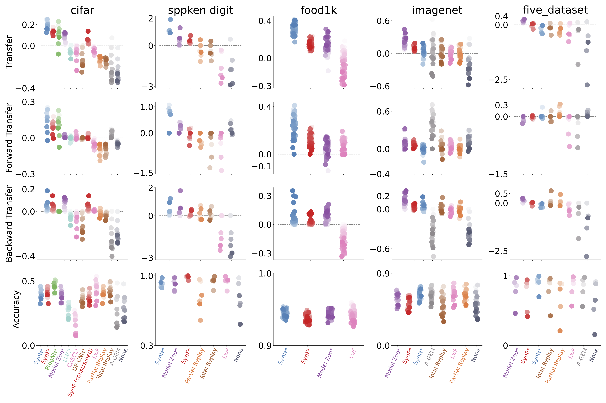

<div> <img src= "images/jhu.png" alt="jhu logo" align="right" width = "240" height= "125"> </div> <br> <br> <br> ## Out-of-distrbution Learning Jayanta Dey <br> PI: Joshua T. Vogelstein, [JHU](https://www.jhu.edu/) <center>  <br> </center> --- <br> <br> <br> ## A simple approach for Lifelong Learning --- ## Lifelong Learning in AI - Given a .ye[sequence] of data associated with different tasks - .ye[Forward transfer]: transfer from past tasks to future tasks - .ye[Backward transfer]: transfer from future tasks to past tasks - .ye[Catastrophic forgetting]: learning new tasks causes performance .ye[degradation] on previous tasks -- ## Natural Intelligence - Biological/natural intelligence (BI) is .ye[Lifelong]: - learning a 2nd language improves 1st language - learning to run improves walking --- ### Performance Summary <center>  </center> --- <br> <br> <br> ## Deep Discriminative to Kernel Density Graph for In- and Out-of-distribution Calibrated Inference --- ## Robotic surgery <center>  </center> .ye[Question:] Which do you prefer, left or right? --- ## A funny experiment with ChatGPT <center>  </center> --- ## Problem Formulation - Consider a supervised learning problem with $\mathrm{IID}$ training samples $\{ (\mathbf{x}\_i, y\_i)\}\_{i=1}^n$ - $(X, Y) \sim P\_{X, Y}$, where $X \sim P\_X$ is a $\mathcal{X} \subseteq \mathbb{R}^d$ valued input and $Y \sim P\_Y$ is a $\mathcal{Y} = \{1, \cdots, K\}$ valued class label. - We define, $\mathcal{S}$ as high density region of $P\_{X}$. We want to estimate $g\_y(\mathbf{x})$ such that: <br> $$g\_y(\mathbf{x}) = P\_{Y|X}(y|\mathbf{x}), ~\text{if} ~\mathbf{x} \in \mathcal{S}$$ $$ = P\_Y(y), ~\text{if} ~\mathbf{x} \notin \mathcal{S}$$ --- ## Simulation Experiments <center>  </center> --- <br> <br> <br> ## Decipher sex by knowing your brain --- ### Data description - ~12000 human MRI scans - ~571 non-human primate scans <center>   </center> --- ### Preliminary results <center>  </center> --- ### Acknowledgements <!-- <div class="small-container"> <img src="faces/ebridge.jpg"/> <div class="centered">Eric Bridgeford</div> </div> <div class="small-container"> <img src="faces/pedigo.jpg"/> <div class="centered">Ben Pedigo</div> </div> <div class="small-container"> <img src="faces/jaewon.jpg"/> <div class="centered">Jaewon Chung</div> </div> --> <div class="small-container"> <img src="faces/jovo.png"/> <div class="centered">Jovo</div> </div> <div class="small-container"> <img src="faces/cep.png"/> <div class="centered">Carey Priebe</div> </div> <div class="small-container"> <img src="faces/hao.jpg"/> <div class="centered">Hao</div> </div> <div class="small-container"> <img src="faces/ashwin.png"/> <div class="centered">Ashwin De Silva</div> </div> <div class="small-container"> <img src="faces/will.jpg"/> <div class="centered">Will LeVine</div> </div> <!-- <div class="small-container"> <img src="faces/mim.jpg"/> <div class="centered">Michael Miller</div> </div> <div class="small-container"> <img src="faces/dtward.jpg"/> <div class="centered">Daniel Tward</div> </div> --> <!-- <div class="small-container"> <img src="faces/vikram.jpg"/> <div class="centered">Vikram Chandrashekhar</div> </div> <div class="small-container"> <img src="faces/drishti.jpg"/> <div class="centered">Drishti Mannan</div> </div> --> <!-- <div class="small-container"> <img src="faces/kwame.jpg"/> <div class="centered">Kwame Kutten</div> </div> --> <!-- <div class="small-container"> <img src="faces/perlman.jpg"/> <div class="centered">Eric Perlman</div> </div> --> <!-- <div class="small-container"> <img src="faces/bcaffo.jpg"/> <div class="centered">Brian Caffo</div> </div> --> <!-- <div class="small-container"> <img src="faces/minh.jpg"/> <div class="centered">Minh Tang</div> </div> --> <!-- <div class="small-container"> <img src="faces/avanti.jpg"/> <div class="centered">Avanti Athreya</div> </div> --> <!-- <div class="small-container"> <img src="faces/vince.jpg"/> <div class="centered">Vince Lyzinski</div> </div> --> <!-- <div class="small-container"> <img src="faces/dpmcsuss.jpg"/> <div class="centered">Daniel Sussman</div> </div> --> <!-- <div class="small-container"> <img src="faces/shangsi.jpg"/> <div class="centered">Shangsi Wang</div> </div> --> <div class="small-container"> <img src="faces/tyler.jpg"/> <div class="centered">Tyler Tomita</div> </div> <div class="small-container"> <img src="faces/alig.jpg"/> <div class="centered">Ali Geisa</div> </div> <!-- <div class="small-container"> <img src="faces/gkiar.jpg"/> <div class="centered">Greg Kiar</div> </div> --> <!-- </div><span style="font-size:200%; color:red;">♥, 🦁, 👪, 🌎, 🌌</span> --> --- ## Questions? ---